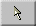

There is another way to change the resistance value. The arrow  at the top of the Tool Bar indicates the Select Tool. Select it by clicking on it. Then click on the resistor in the circuit.
When you have done this correctly, information about the resistor will be displayed below the circuit:
You can change the resistance by entering a new value in the data entry field. Enter a new resistance value. To implement your value, click the Calculator icon above the data entry field. This will recalculate all values on display in accordance with the changed resistance.